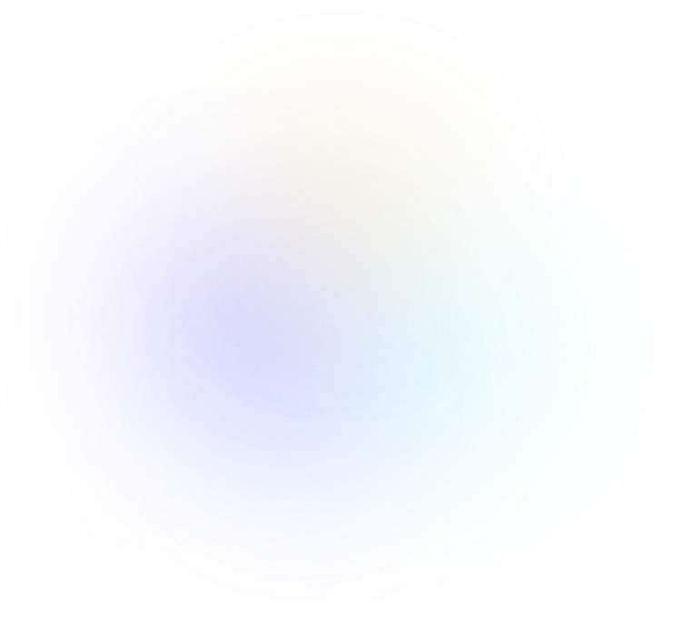

從業務流程到完整體驗，打造阿發全新班機延誤理賠流程
組長 小花 ｜ 設計 景崙
從諮詢到理賠申請，打造班機延誤自助服務新體驗
客服
預計降減班機延誤客服進線
-60% (約11,000通)
理賠
預計減少需要補交文件的案件
-39.4% (約5000件)
理賠新增功能
自動核賠件數
+1,000 件
MVP目標
Phase 1｜班機延誤理賠主流程
Phase 2｜登入、註冊、滿意度調查
設計目標
- 實現對話即完成理賠，將業務流程轉化為直覺、連貫的對話式申請體驗
- 透過防呆設計，降低填寫錯誤與文件缺漏風險
- 主動發掘使用情境，補足流程規劃中的體驗缺口
- 透過使用者測試驗證設計，提出改善方案
設計規模
將理賠流程展開為完整畫面與操作路徑，涵蓋正常、錯誤及等待情境
150個不重複畫面
涵蓋各步驟的正常、錯誤與等待狀態
253條流程連線
串接各畫面與不同操作路徑
14類異常處理
格式、辨識、驗證、連線、逾時
01
提出理賠
確認客戶意圖
16 個畫面02
身分驗證
會員登入 / 註冊
63 個畫面03
確認航班資訊
上傳登機證、延誤證明
44 個畫面04
匯款資料
填理賠款帳戶
16 個畫面05
驗證送出
輸入驗證碼確認身份
20 個畫面主要流程通用流程
流程設計
從業務規格落地至實際設計，補足流程缺口並提出具體設計方案
異常處理
系統錯誤也有清楚的指引，保證服務不中斷
14類異常情境4 大分類 · 分層處理
發生錯誤時，說明原因並提供後續處理方式- 檔案格式錯誤
- 檔案超過 10 MB
- 文件無法辨識
- 系統辨識異常
- OTP 輸入錯誤
- OTP 已失效
- OTP 錯誤達上限
- 帳號鎖定
- 欄位格式錯誤
- 查無有效保單
- 搜尋查無結果
- 連線／API 異常
- 對話逾時
- 不當輸入與提問上限
四類異常各舉一例：發生錯誤時說明原因，並提供下一步
使用者驗證
以使用者回饋驗證設計假設，將兩項關鍵問題轉化為具體改善方案
49
人進行 A/B 測試- 27A 組｜紙本登機證
- 22B 組｜電子登機證
- 37完成測試
根據辨識失敗的測試回饋，強化錯誤說明與後續操作引導
66.7%人不認為畫面
有清楚說明失敗原因
問題
辨識失敗原因與後續操作指引不夠明確
解法首次失敗說明原因，第 2 次失敗後引導手動輸入
將理賠適用條件提前並分層呈現，讓關鍵申請資格更容易辨識
75.7%人未完整答對理賠適用條件（28／37 人）
問題
適用條件隱藏於較長的說明文字中，不易掌握重點
解法將「本人投保個人件」與「延誤後仍搭原班機」提前呈現，並補充適用限制
BEFORE原本的長段落說明
AFTER先講兩項適用條件
國泰產險智能助理阿發Beta
我想申請班機延誤的理賠
10:07 PM 送出
班機延誤理賠注意事項
- 本服務僅適用班機延誤後仍搭乘原航班。以下情況請改由產險官網或線下通路辦理：
- 班機取消/改搭其他班機
- 申請實支實付型
- 錯過轉機航班
- 同時申請其他理賠項目
- 限個人件，且要保人與被保險人須為同一人
- 須為班機延誤發生後二年內提出
- 須為國泰產險會員
申請前請準備：
- 登機證
- 本人匯款帳戶
- 班機延誤證明（視情況）
10:07 PM 送出
告訴我你想做什麼
當您傳送訊息，即表示同意「AI告知聲明」。本服務由AI提供，
內容僅供參考，實際資訊仍以國泰產險官網公告為準。
國泰產險智能助理阿發Beta
我想申請班機延誤的理賠
10:07 PM 送出
班機延誤理賠注意事項
透過阿發申請，須符合：
- 國泰產險會員本人投保個人件（要保人與被保險人都是本人）
- 延誤後仍搭乘原班機
- 須於延誤後 2 年內申請
以下情況請改由官網或其他通路辦理：
- 取消／改搭班機
- 錯過轉機
- 申請實支實付
- 同時申請其他理賠
申請前請準備：
- 登機證
- 本人匯款帳戶
- 班機延誤證明
10:07 PM 送出
告訴我你想做什麼
當您傳送訊息，即表示同意「AI告知聲明」。本服務由AI提供，
內容僅供參考，實際資訊仍以國泰產險官網公告為準。
結案總結
四項設計目標皆已完成，交付開發
100%
設計目標已交付設計交付User FlowUI 畫面互動原型易用性測試報告
專案時程
2 個月即完成設計交付，銜接開發測試與 2027 年第一季上線計畫
8月9月10月11月12月1月2月
產險阿發
班機延誤
11/9